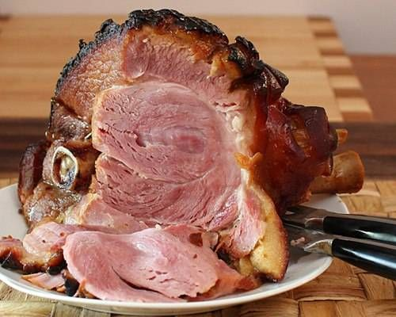

Secondi piatti

Da sempre, nella nostra cucina, i secondi piatti rivestono un ruolo importante. Che sia a pranzo o a cena, un buon secondo è considerato indispensabile per un pasto completo, nutrizionalmente bilanciato, che permetta di soddisfare anche il palato. Divisi in quattro categorie – secondi a base di carne, a base di pesce, a base di verdure e a base mista – i secondi piatti si prestano molto bene anche a essere considerati piatti unici, soprattutto se abbinati a un contorno, e sono ideali anche durante le diete. Tante le ricette che spaziano dalla cotoletta alla milanese al pollo alla cacciatore o all’anatra all’arancia. Non mancano i salumi o il pesce.